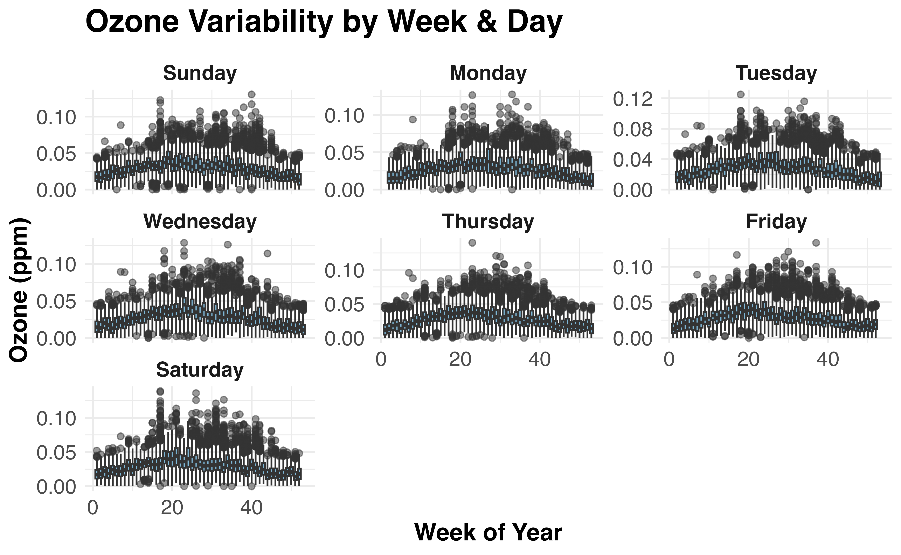

tidypollute: Getting Started
Dr. Nelson Roque
easy-request.RmdGetting Started with tidypollute
Goals of this Notebook
This notebook demonstrates how to download and stack EPA AirData files for 1991-1992 focusing on Ozone (44201) data.
The simplest request retrieves EPA AirData for a specific analyte (pollutant) over a given time range (e.g., download daily ozone (44201) data for 1991-1992).
library(tidypollute)
ozone <- get_epa_airdata(analyte = "44201", start_year = 1991, end_year = 1992, freq = "daily")##
## Preparing to download:
## Analyte: 44201
## Years: 1991 to 1992
## Number of files: 2
## Freq of data: daily
## Output directory: data/
# Load necessary libraries
library(tidyverse)
library(ggplot2)
library(patchwork)
library(viridis)
library(hrbrthemes)
library(extrafont)
library(lubridate) # For handling dates
# Ensure Helvetica or Arial is available
loadfonts(device = "win")
theme_set(theme_minimal(base_family = "Helvetica")) # Use Arial if Helvetica isn't available
# ---- Data Preparation ----
# Convert date_local to Date format
ozone_f <- ozone %>%
mutate(date_local = as.Date(date_local),
day_of_week = wday(date_local, label = TRUE, abbr = FALSE),
week_of_year = isoweek(date_local),
year = year(date_local)) %>%
filter(year == 1992) %>%
full_join(us_states) %>%
mutate(max_hour = as.numeric(x1st_max_hour))
# Aggregate mean ozone levels per day
ozone_summary <- ozone_f %>%
group_by(date_local, state_region) %>%
summarise(mean_ozone = mean(arithmetic_mean, na.rm = TRUE))
# Define key holidays
holidays <- tibble(
date_local = as.Date(c("1991-07-04", "1991-12-01", "1992-07-04", "1992-12-01")),
holiday = c("July 4", "Dec 1", "July 4", "Dec 1")
)
# ---- Panel 1: Heatmap ----
heatmap_plot <- ggplot(ozone_f, aes(x = date_local, y = max_hour, fill = x1st_max_value)) +
geom_tile() +
scale_fill_viridis(option = "magma", name = "Ozone Level", direction = -1) +
labs(
title = "Hour of Worst (Max) Ozone Concentrations",
x = "Date",
y = "Hour of Day"
) +
theme_minimal(base_family = "Helvetica") +
theme(
plot.title = element_text(size = 18, face = "bold", margin = margin(b = 10)),
axis.title = element_text(size = 14, face = "bold"),
axis.text = element_text(size = 12),
legend.position = "right"
)
heatmap_plot
# ---- Panel 2: Time Series with WHO Thresholds ----
time_series_plot <- ggplot(ozone_summary, aes(x = date_local, y = mean_ozone)) +
#geom_line(color = "#0072B2", size = 1.2, alpha = 0.8) +
geom_jitter(color = "#D55E00", size = 2, alpha = 0.4) +
# geom_hline(data = who_thresholds, aes(yintercept = threshold, linetype = label), color = "gray50") +
geom_vline(data = holidays, aes(xintercept = as.numeric(date_local)), linetype = "dashed", color = "red", size = 0.8) +
labs(
title = "Daily Average Ozone Levels",
x = "Date",
y = "Ozone (ppm)"
) +
theme_minimal(base_family = "Helvetica") +
theme(
plot.title = element_text(size = 18, face = "bold", margin = margin(b = 10)),
axis.title = element_text(size = 14, face = "bold"),
axis.text = element_text(size = 10),
plot.caption = element_text(size = 10, face = "italic", hjust = 1),
legend.position = "bottom"
) +
facet_grid(.~ state_region)
time_series_plot
# ---- Panel 3: Variability by Week & Day of the Week ----
variability_plot <- ggplot(ozone_f, aes(x = week_of_year, y = arithmetic_mean, group = week_of_year)) +
geom_boxplot(fill = "#0072B2", alpha = 0.5) +
facet_wrap(~ day_of_week, scales = "free_y") +
labs(
title = "Ozone Variability by Week & Day",
x = "Week of Year",
y = "Ozone (ppm)"
) +
theme_minimal(base_family = "Helvetica") +
theme(
plot.title = element_text(size = 18, face = "bold", margin = margin(b = 10)),
axis.title = element_text(size = 14, face = "bold"),
axis.text = element_text(size = 12),
strip.text = element_text(size = 12, face = "bold")
)
variability_plot
# ---- Combine Plots Using Patchwork ----
final_plot <- (heatmap_plot / time_series_plot / variability_plot) +
plot_annotation(
title = "Ozone Levels Over Time",
subtitle = "Hourly Concentrations, Daily Trends with WHO Guidelines, and Weekly Variability",
caption = "Data Source: EPA AirData (https://aqs.epa.gov/aqsweb/airdata/download_files.html)",
theme = theme(
plot.title = element_text(size = 22, face = "bold", margin = margin(b = 12)),
plot.subtitle = element_text(size = 16, margin = margin(b = 8)),
plot.caption = element_text(size = 12, face = "italic", hjust = 1)
)
)Summary
This notebook provides a simple workflow for
retrieving EPA AirData using tidypollute.
You can:
✅ Retrieve and filter dataset links (to zip
files).
✅ Download specific pollutant data (e.g., Ozone,
Wind).
✅ Stack and process the downloaded files.
✅ Scales up to download all available EPA AirData.
For more details, check out tidypollute
documentation.